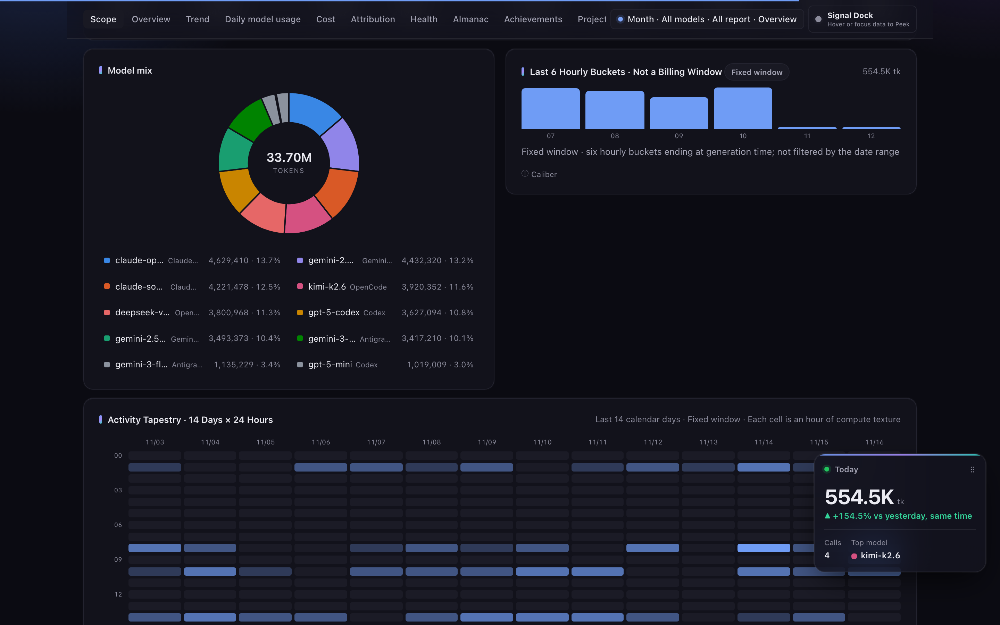

01 · Read
五类来源
tokens 在本机自动发现并读取 Claude Code、Gemini CLI、Codex、OpenCode 与 Antigravity 用量记录，输出终端摘要、额度燃尽与只读 git 投入产出报告、仅限回环地址的实时 Dashboard 或单文件离线快照。核心管线使用 Python 标准库；Windows 额外需要 tzdata。
Python ≥ 3.9 · 五类本地来源 · 中英双语 · 无 CDN · 不上传数据

自动发现并统一读取 Claude Code、Gemini CLI、Codex、OpenCode 与 Antigravity 本地记录。
用 tokens quota 查看额度窗口与撞线预测，用 tokens outcomes 统计 git 提交、7 天留存行与返工税。
首屏今日简报、模型对比、今日浮窗与费用账本，支持终端、静态 HTML、本机实时与离线单文件。
看板顶部按本地规则生成一句话简报与四张效率卡片（每 $1 留存行、返工税、订阅回本、缓存命中率）；今日浮窗实时展示 Codex 官方与 Claude 估算的额度燃尽预测。
tokens outcomes 与看板的“模型对比”区块把会话关联到本机只读 git 提交与 7 天留存行，按花费占比把产出分摊到模型和工具，并标出低样本行。
不传 --source 时默认按 auto 自动检测并启用所有存在且可读的五个来源（只检查路径不打开正文），保留各自口径，并透明展示跳过的文件。
快速跳过与流式写盘显著提升冷启动与缓存性能；提供 --lang en|zh 与看板页面内中英切换；在 Windows、macOS、Linux 及 Chromium、Firefox、WebKit 上全面验证。